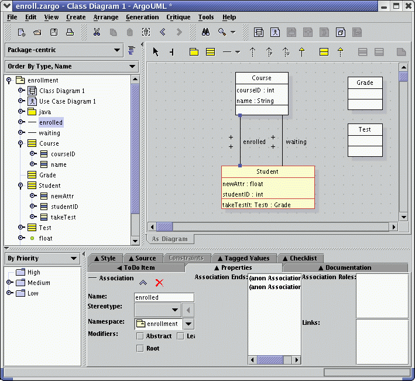

Previous step |
Back to ArgoUML Tours |
Next step
Building a Class Diagram
Step #8: Moveing, Resizeing, and drawing Associations
First, move the Student class below the Course class, and enlarge them. You
move items by simply dragging them with the left mouse button. Resizing is done
by selecting the class, so that the little blue square "handles" become visible,
and then dragging these to resize the class.
To add an association, click on the Association icon
 in the toolbar,
click on the Course, drag to the Student class and release the mouse.
Associations can be moved/resized in the same way as classes.
in the toolbar,
click on the Course, drag to the Student class and release the mouse.
Associations can be moved/resized in the same way as classes.
You can name the association in the name field of the property panel
in the Properties tab of the Details pane (bottom-right):
one to "enrolled" and one to "waiting".
Now, you should have the situation as shown in the figure below.

Previous step |
Next step
Back to ArgoUML Tours
Back to ArgoUML Home